対象サイト: https://muto-coffee.com/ ／ 作成日: 2026-09-11 ／ 版: 1.0
中野の自家焙煎コーヒー店 MUTO coffee roastery の公式サイトを、 実店舗の体験価値をそのまま伝え、豆の通販と来店の両方につなげるサイトへ引き上げるための設計書一式です。
| 順 | ファイル | 内容 |
|---|---|---|
| 1 | 00_はじめに.md | 目的、調査方法と制約、成果物一覧、結論の要点 |
| 2 | 01_現状分析と課題.md | 店舗プロフィール、現行構成、課題 A〜H と優先度 |
| 3 | 02_サイト設計.md | 統合方針の 3 案比較、サイトマップ、全ページの画面設計 |
| 4 | 03_デザインシステム.md | 配色、タイポグラフィ、コンポーネント、写真とアクセシビリティ |
| 5 | 04_技術要件・SEO・計測設計.md | 技術構成、リダイレクト、構造化データ、SEO、速度、計測 |
| 6 | 05_実装ロードマップ・見積.md | フェーズ 0〜3、工数と費用、運用設計、確認チェックリスト |
時間がない場合は 00_はじめに.md の §5「結論」と 01_現状分析と課題.md の §4「優先度マトリクス」だけで全体像がつかめます。
本設計書を作成したセッションでは、組織のネットワーク送信ポリシーにより muto-coffee.com への直接アクセスが遮断されていました。 このため サイト本体の HTML 取得・実画面のスクリーンショット撮影・掲載画像のダウンロードは実行できていません。
現状分析は、検索エンジン経由で取得できた URL・ページタイトル・スニペットと、第三者媒体（食べログ、さんたつ、中野経済新聞、号外NET 中野区ほか）の記述を突き合わせて構成しています。 出典は data/sources.md にすべて記載しています。
記述には確度のラベルを付けています。
実装着手前に、【推定】【要確認】をすべて潰してください。 チェックリストは 05_実装ロードマップ・見積.md の巻末にあります。
現物の画像とスクリーンショットは、同梱の tools/capture_site.py を
ネットワーク制限のない環境で実行すれば自動収集できます。
| 図 | ファイル | 内容 |
|---|---|---|
| 01 | images/01_sitemap_current.png |
現行サイト構成と、そこから生じている問題 |
| 02 | images/02_sitemap_proposed.png |
改善後サイト構成（1 ドメイン・1 システムへの統合） |
| 03 | images/03_user_journey.png |
3 つの利用者のつまずきと改善後の状態 |
| 04 | images/04_wireframe_top_pc.png |
トップページ ワイヤーフレーム（PC） |
| 05 | images/05_wireframe_top_sp.png |
トップページ ワイヤーフレーム（スマートフォン） |
| 06 | images/06_wireframe_beans_list.png |
豆一覧ページ（絞り込みと味の見える化） |
| 07 | images/07_wireframe_product_detail.png |
商品詳細ページ |
| 08 | images/08_wireframe_shop_access.png |
店舗案内・アクセス（写真つき道順） |
| 09 | images/09_style_guide.png |
デザインシステム スタイルガイド |
| 10 | images/10_roadmap.png |
実装ロードマップ（フェーズ 0〜3） |
| 11 | images/11_kpi_tree.png |
KPI ツリーと計測設計 |
図版の生成元 HTML は src/ にあります。python3 src/render.py <ファイル名> で再生成できます。
| ファイル | 内容 |
|---|---|
data/page_inventory.csv |
確認できた 24 ページの一覧（URL・title・システム推定・確度） |
data/products.csv |
確認できた商品と価格＋店舗記入用の産地情報フォーマット |
data/store_menu.csv |
店内メニューと参考価格【要確認】 |
data/keyword_plan.csv |
SEO キーワード設計（優先度・意図・受け皿ページ・施策） |
| data/sources.md | 出典 URL 一覧と、情報の不一致についての注記 |
data/products.csvの【要記入】欄は、店舗しか持っていない情報です。 標高・品種・精製方法・フレーバーノート・焙煎度を全商品分ヒアリングしてください。 ここが埋まらないと、課題 C（豆を選べない）は解決しません。
| 観点 | 現状 | 改善後 |
|---|---|---|
| サイトの役割 | 存在の告知 | 来店と購入を生む装置 |
| 店舗情報 | 媒体ごとにバラバラ | 公式が唯一の正 |
| 豆の見せ方 | 個別ページに散在 | 選べる・比べられる・迷わない |
| News | 臨時休業の告知 | 豆と焙煎の物語（検索資産） |
| 購入 | カードのみ・都度購入 | 決済多様化・定期便 |
| 対応言語 | 日本語のみ | 日本語＋英語（要点のみ） |
| 運用 | 2 システムを二重更新 | 1 箇所の更新で全面反映 |
本体改修の予算を待たずに着手できる 9 項目です。合計 約 18 時間・10〜20 万円程度。
CafeOrCoffeeShop）を追加8 を最優先で実施してください。 改修前の数値がなければ、改修の効果を証明できません。
| 項目 | 内容 |
|---|---|
| 対象サイト | https://muto-coffee.com/ （およびオンラインショップ https://www.muto-coffee.com/shop/） |
| 対象事業者 | MUTO coffee roastery（運営: 株式会社 Lounge M / 店主: 武藤 修一郎） |
| 所在地 | 〒164-0001 東京都中野区中野3-34-18 |
| 作成日 | 2026-09-11 |
| 版 | 1.0 |
| 作成 | Claude Code（自動生成） |
MUTO coffee roastery の公式サイトを、「中野の名店として知られているが、Web 上の存在感がそれに追いついていない」 状態から、 「実店舗の体験価値をそのまま伝え、豆の通販・来店の両方に確実につなげるサイト」 へ引き上げるための設計図です。
本書は以下の読者を想定しています。
本設計書の現状分析は、以下の公開情報の突き合わせによって構成しています。
本セッションの実行環境では、組織のネットワーク送信ポリシー（egress proxy）により
muto-coffee.comを含む外部サイトへの直接アクセスが遮断されました。 このため サイト本体の HTML 取得・実画面のスクリーンショット撮影・掲載画像そのもののダウンロードは実行できていません。
具体的に取得できていないもの:
| 取得できなかったもの | 影響 | 対応策 |
|---|---|---|
| 実ページのスクリーンショット | 現状デザインの視覚的評価ができない | ローカル実行用の取得スクリプト tools/capture_site.py を同梱（後述） |
| 掲載画像ファイル（写真・ロゴ） | 画像最適化の実測（容量・寸法・形式）ができない | 測定手順と合格基準を 04_技術要件・SEO・計測設計.md に定義 |
| HTML / CSS / JS ソース | 使用 CMS・テーマ・プラグインの確定ができない | URL 構造からの推定として明示（§現状分析） |
| Core Web Vitals 実測値 | 速度改善の before/after が数値で示せない | 測定方法と目標値を定義、実測は実装時に取得 |
誤った前提で実装が進むことを防ぐため、記述には以下のラベルを付けています。
実装着手前に、【推定】と【要確認】のラベルが付いた項目をすべて潰してください。 チェックリストを 05_実装ロードマップ・見積.md の巻末に用意しています。
docs/muto-coffee/
├── 00_はじめに.md ← 本書
├── 01_現状分析と課題.md 現状の構成・課題の棚卸しと優先度
├── 02_サイト設計（IA・ワイヤーフレーム）.md サイトマップ・全ページの画面設計
├── 03_デザインシステム.md 配色・タイポ・コンポーネント定義
├── 04_技術要件・SEO・計測設計.md 実装要件、構造化データ、計測、性能基準
├── 05_実装ロードマップ・見積.md フェーズ分け、工数目安、確認チェックリスト
├── images/ 図版・ワイヤーフレーム（PNG）
│ ├── 01_sitemap_current.png
│ ├── 02_sitemap_proposed.png
│ ├── 03_user_journey.png
│ ├── 04_wireframe_top_pc.png
│ ├── 05_wireframe_top_sp.png
│ ├── 06_wireframe_beans_list.png
│ ├── 07_wireframe_product_detail.png
│ ├── 08_wireframe_shop_access.png
│ ├── 09_style_guide.png
│ ├── 10_roadmap.png
│ └── 11_kpi_tree.png
├── src/ 図版の生成元 HTML（再編集可能）
├── data/ 調査データ（CSV / 出典一覧）
│ ├── page_inventory.csv 確認できたページの一覧
│ ├── products.csv 確認できた商品と価格
│ ├── keyword_plan.csv SEO キーワード設計
│ └── sources.md 出典 URL 一覧
└── tools/
└── capture_site.py サイト画像・スクショ取得スクリプト（ローカル実行用）
tools/capture_site.py は、ネットワーク制限のない環境（店舗側 PC、制作会社の開発機など）で実行することで、
本セッションで取得できなかった以下を自動収集します。
<title> / meta description / OGP / 見出し構造の抽出（CSV 出力）実行方法は tools/capture_site.py の冒頭コメントに記載しています。
収集結果を images/actual/ に置けば、本設計書の現状分析を実測値で補強できます。
詳細は各章に譲りますが、優先順位は次の通りです。
www 有無も揺れている。ここが最大の損失源。| 項目 | 内容 | 確度 |
|---|---|---|
| 店名 | MUTO coffee roastery（ムトウ コーヒー ロースタリー） | 【確認済】 |
| 運営会社 | 株式会社 Lounge M | 【確認済】特商法表記 |
| 代表 | 武藤 修一郎 | 【確認済】 |
| 所在地 | 〒164-0001 東京都中野区中野3-34-18 | 【確認済】 |
| 電話 | 03-6382-5439 | 【確認済】 |
| 開業 | 2014年10月3日 | 【確認済】中野経済新聞 |
| アクセス | JR中央線・東京メトロ東西線 中野駅 南口 徒歩2〜3分／中野マルイ裏、れんが坂を上って左 | 【確認済】 |
| 営業時間 | 11:30〜19:00（L.O. 18:00） | 【要確認】※後述の不一致あり |
| 定休日 | 水曜・木曜 | 【要確認】※後述の不一致あり |
| 焙煎機 | オランダ GIESEN 社製 | 【確認済】 |
| 豆の品揃え | 常時 10〜15 種類 | 【確認済】 |
| 店主の経歴 | 元 CM プロデューサー。堀口珈琲で焙煎・テイスティングを修業後、地元・中野で開業 | 【確認済】 |
| 公式 Instagram | @mutocoffeeroastery（フォロワー約 482 / 投稿 9 件） | 【確認済】 |
| 公式 Facebook | あり | 【確認済】 |
現状分析の前に、サイトが伝えきれていない強みを確認しておきます。改善設計はすべてここに接続します。
これらは第三者媒体（さんたつ、中野経済新聞、号外NET 中野区、無印良品の中野まち歩き記事など）では繰り返し語られています。 一方で、公式サイトからこれらが同じ強度で伝わっているとは言い難い状態です。これが本改善の核心です。
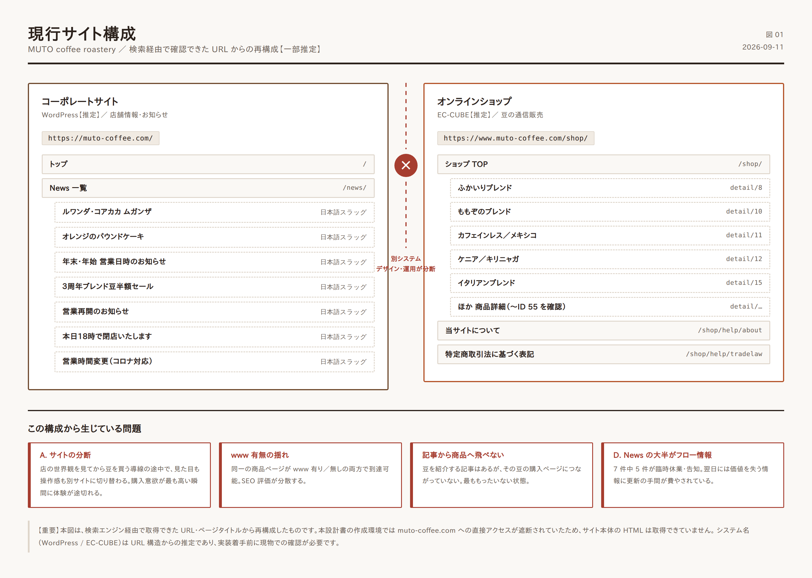
| URL | 役割 | 備考 |
|---|---|---|
https://muto-coffee.com/ |
トップページ | <title>: 「MUTO coffee roastery - 中野 / 東京」 |
https://muto-coffee.com/news/ |
News 一覧 | <title>: 「News一覧 | MUTO coffee roastary」 |
https://muto-coffee.com/{日本語スラッグ}/ |
News 個別記事 | 例: 「ルワンダ・コアカカ ムガンザ」「オレンジのパウンドケーキ」「年末・年始 営業日時のお知らせ」「３周年ブレンド豆半額セール」「テイク・アウト 始めました。」「営業再開のお知らせ」「営業時間変更（新型コロナウイルス感染拡大防止のため）」 |
https://www.muto-coffee.com/shop/ |
オンラインショップ TOP | <title>: 「MUTO coffee roastery / TOPページ」 |
https://www.muto-coffee.com/shop/products/detail/{ID} |
商品詳細 | ID は 8, 10, 11, 12, 15, 17, 20, 34, 37, 41, 55 などを確認 |
https://www.muto-coffee.com/shop/help/about |
当サイトについて | |
https://www.muto-coffee.com/shop/help/tradelaw |
特定商取引法に基づく表記 |
（詳細は data/page_inventory.csv）
| 領域 | 推定 | 根拠 |
|---|---|---|
| コーポレート側 | WordPress【推定】 | /news/ というアーカイブ構造、投稿タイトルが日本語のままスラッグ化されている URL 形式、{記事名} \| {サイト名} という標準的な title 構成 |
| ショップ側 | EC-CUBE【推定】 | /shop/products/detail/{ID}、/shop/help/about、/shop/help/tradelaw は EC-CUBE の既定 URL 体系と一致 |
| 連携 | なし、もしくは弱い【推定】 | 2 システムが別ディレクトリ・別ドメイン表記で並存 |
【要確認】 実装着手前に、WordPress のバージョン・テーマ・プラグイン、EC-CUBE のメジャーバージョン（2系/3系/4系）を必ず確認してください。EC-CUBE 2 系・3 系はすでにサポートが終了しており、セキュリティ上の重大リスクになります。ここは「デザイン改善」より優先度が高い可能性があります。
課題は 影響度（売上・来店への効き方）× 改修コスト で整理しています。
現象
muto-coffee.com、WordPress 推定）とオンラインショップ（www.muto-coffee.com/shop/、EC-CUBE 推定）が別システム。www の有無が揺れている。検索結果には https://muto-coffee.com/shop/products/detail/41 と https://www.muto-coffee.com/shop/products/detail/12 の両方が出現しており、同一コンテンツが 2 つの URL で到達可能な状態【確認済】。何が起きるか
対応方針 → 02_サイト設計 §2（統合方針）
現象 — 営業時間・定休日が媒体ごとに食い違っています【確認済】。
| 情報源 | 営業時間 | 定休日 |
|---|---|---|
| 複数媒体（多数派） | 11:30〜19:00（L.O. 18:00） | 水曜・木曜 |
| 一部媒体 | 11:30〜19:30（L.O. 19:00） | 木曜＋第1・第3水曜 |
何が起きるか
対応方針 — 公式サイトに単一の「正」を置き、構造化データ（LocalBusiness / openingHoursSpecification）で機械可読にする。→ 04_技術要件 §3
これは コストが小さく効果が確実。最優先で着手すべき項目です。
現象
/shop/products/detail/{ID} に個別に存在するだけ【確認済】。何が起きるか
コーヒー豆の通販で客が知りたいのは、突き詰めると次の 4 点です。
現状は商品名と価格が主で、この 4 点に答える設計になっていない可能性が高い状態です。 結果、迷った客は買わずに離脱します。コーヒー通販における最大の離脱ポイントです。
対応方針 → 02_サイト設計 §5（豆一覧・商品詳細の設計）
現象 — 確認できた News 記事の内訳【確認済】:
| 種別 | 例 | 性質 |
|---|---|---|
| 臨時休業・時短の告知 | 「本日7月26日（火）18時で閉店いたします。」「やむを得ない事情により18時閉店」 | フロー情報（翌日には価値ゼロ） |
| 年末年始の営業案内 | 「年末・年始 営業日時のお知らせ」 | 毎年繰り返される |
| 営業再開・コロナ対応 | 「営業再開のお知らせ」「営業時間変更（新型コロナウイルス感染拡大防止のため）」 | すでに陳腐化 |
| 商品・メニューの紹介 | 「ルワンダ・コアカカ ムガンザ」「オレンジのパウンドケーキ」 | ストック情報（資産になる） |
| セール告知 | 「３周年ブレンド豆半額セール」 | フロー情報 |
何が起きるか
対応方針 — 臨時のお知らせは記事にせず「お知らせバー」で処理し、記事枠は豆・焙煎・淹れ方の資産コンテンツに集中する。→ 02_サイト設計 §7
現象 — 公式 Instagram @mutocoffeeroastery は フォロワー約 482・投稿 9 件【確認済】。
何が起きるか
対応方針 — サイト側に Instagram 導線と埋め込みを設け、投稿→サイト→購入の往復を作る。撮影・投稿の運用ルールを定義する。→ 05_実装ロードマップ §運用設計
現象
対応方針 — 全訳ではなく、訪日客が必要とする情報だけの 1 ページ英語版（場所・行き方・営業時間・何が飲めるか・豆は買えるか・支払い方法）を用意。費用対効果が非常に高い施策です。→ 02_サイト設計 §8
現象 — News ページの <title> が 「MUTO coffee roastary」 となっています【確認済】。正しくは roastery。トップページは「MUTO coffee roastery - 中野 / 東京」で正しい表記です。
何が起きるか — 検索結果とブラウザのタブに誤字が表示され続けます。実害は小さいものの、品質にこだわる店のサイトとしては相応しくありません。修正コストはほぼゼロです。
対応方針 — WordPress のサイトタイトル設定を修正（作業 5 分）。
現象 — 特商法表記より、支払方法はクレジットカードのみ、ヤマト運輸で 3 営業日以内に発送、配送は国内のみ【確認済】。
何が起きるか
対応方針 → 02_サイト設計 §5.4、05_実装ロードマップ フェーズ3
| 課題 | 影響度 | 改修コスト | 優先度 | 着手フェーズ |
|---|---|---|---|---|
| B: 店舗情報の一次情報化 | 大 | 小 | 1 | フェーズ 1 |
| G: title 誤字 | 小 | 極小 | 1 | フェーズ 1 |
| A: サイト分断の解消 | 最大 | 大 | 2 | フェーズ 2 |
| C: 豆を選べる導線 | 大 | 中 | 2 | フェーズ 2 |
| F: 英語 1 ページ | 中 | 小 | 3 | フェーズ 2 |
| D: News の資産化 | 中 | 小（運用） | 3 | フェーズ 2〜継続 |
| E: SNS 連携と運用 | 中 | 小（運用） | 3 | フェーズ 2〜継続 |
| H: 決済・定期購入 | 中 | 中 | 4 | フェーズ 3 |
セキュリティに関する注記 【要確認】EC-CUBE のバージョンが 2 系・3 系である場合、サポート終了済みのため上記すべてに優先して対応方針の判断が必要です。カード情報を扱う以上、これは経営リスクの問題です。4 系への移行、または外部 EC プラットフォーム（Shopify / STORES / BASE）への移設を検討してください。判断材料は
05_実装ロードマップ§3 に整理しています。
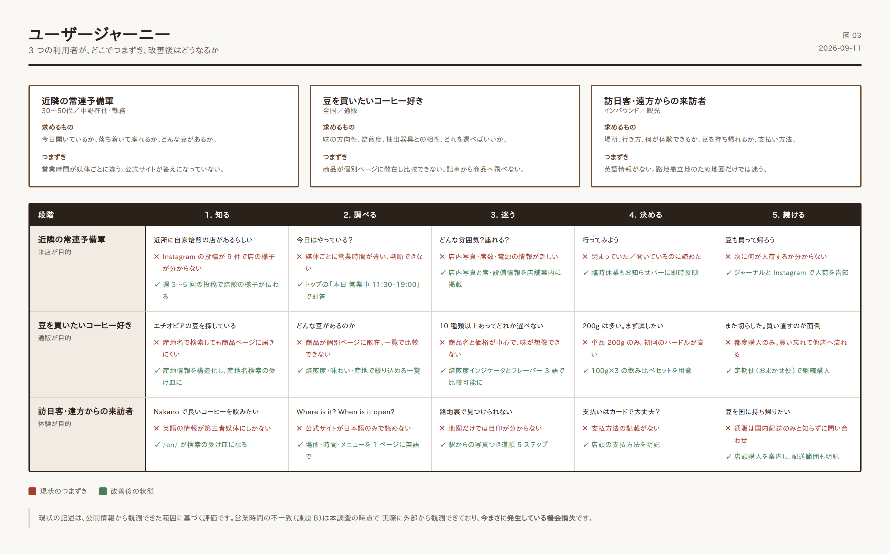
想定する主要な 3 つの利用者と、現状のつまずきです。
| 観点 | 現状 | 改善後 |
|---|---|---|
| サイトの役割 | 存在の告知 | 来店と購入を生む装置 |
| 店舗情報 | 媒体ごとにバラバラ | 公式が唯一の正 |
| 豆の見せ方 | 個別ページに散在 | 選べる・比べられる・迷わない |
| News | 臨時休業の告知 | 豆と焙煎の物語（検索資産） |
| 購入 | カードのみ・都度購入 | 決済多様化・定期便 |
| 対応言語 | 日本語のみ | 日本語＋英語（要点のみ） |
| 運用 | 2 システムを二重更新 | 1 箇所の更新で全面反映 |
「毎朝、焙煎しています。」
— 店の前を通れば分かることを、Web でも分かるようにする。
MUTO coffee roastery の本質は ロースタリーであることです。オランダ GIESEN の焙煎機が店内にあり、毎朝そこで豆が焼かれ、その豆が棚に並び、その場で淹れられ、量り売りで持ち帰れる。この一連の流れが、この店の価値そのものです。
新しいサイトは、この流れをそのまま構造にします。
焙煎する → 並ぶ → 飲む → 持ち帰る／届く
(物語) (豆一覧) (店舗) (購入・定期便)
| 原則 | 意味 | 具体的な判断基準 |
|---|---|---|
| 1. 迷わせない | 「今日開いてる？」「どの豆？」に即答する | トップから 2 クリック以内で全情報に到達 |
| 2. 途切れさせない | 読む→欲しくなる→買う が同一体験 | 記事・豆・購入が同じデザイン言語の中で完結 |
| 3. 静けさを保つ | 路地裏の隠れ家という実店舗の質感を Web でも守る | 余白を広く、装飾を削り、写真と文字だけで語る |
課題 A（サイトの分断）への対応です。3 案を比較し、案 B を推奨します。
| 内容 | |
|---|---|
| 概要 | WordPress と EC-CUBE を残したまま、デザインを揃え相互リンクを強化 |
| コスト | 小（〜50万円規模） |
| メリット | 既存資産・既存 URL をほぼ維持できる。移行リスクが最小 |
| デメリット | 二重運用が残る。EC-CUBE のバージョンが古い場合、セキュリティ課題も残る。体験の断絶は緩和されるが解消しない |
| 向くケース | EC-CUBE が 4 系で稼働中かつ、当面は現状維持したい場合 |
| 内容 | |
|---|---|
| 概要 | コーポレートとショップを WordPress 側に一本化。EC は WooCommerce で構築し、muto-coffee.com 単一ドメインに集約 |
| コスト | 中（80〜150万円規模） |
| メリット | 1 システム・1 デザイン・1 回の更新。記事から商品への導線が自然に作れる。SEO 評価が 1 ドメインに集約される。定期購入プラグインで サブスク も実現可能 |
| デメリット | EC-CUBE からの商品・顧客データ移行が必要。URL 変更に伴う 301 リダイレクト設計が必須 |
| 向くケース | 本件に最も適合。 商品点数が 10〜20 点規模で、記事と商品の連動が価値を生む業態 |
| 内容 | |
|---|---|
| 概要 | EC の基盤を Shopify にし、コーポレートページも Shopify 上に構築 |
| コスト | 中〜大（100〜200万円＋月額） |
| メリット | 決済・定期購入・在庫・セキュリティを全てプラットフォームが担保。運用負荷が最小 |
| デメリット | 月額費用と決済手数料が継続発生。デザインの自由度がテーマに制約される。記事機能（Shopify Blog）は WordPress より弱い |
| 向くケース | 通販を事業の主軸に据え、拡大を狙う場合 |
【要確認】 最終判断の前に、現行 EC-CUBE のバージョン、商品データ・顧客データ・注文履歴の件数、現在の月間受注数を確認してください。移行工数がここで決まります。
現在 www 有り／無しの両方で到達可能な状態です【確認済】。どちらかに統一し、他方は 301 リダイレクトします。
推奨: https://muto-coffee.com/ に統一（www なし）
https://www.muto-coffee.com/* → 301 → https://muto-coffee.com/*
旧 EC-CUBE の URL も個別に対応付けます。
/shop/products/detail/10 → 301 → /beans/momozono-blend/
/shop/products/detail/8 → 301 → /beans/fukairi-blend/
/shop/help/tradelaw → 301 → /legal/tradelaw/
/shop/help/about → 301 → /about-shop/
全商品 ID の対応表を作成してから移行してください。 対応付けを怠ると、検索流入と外部リンクを失います。
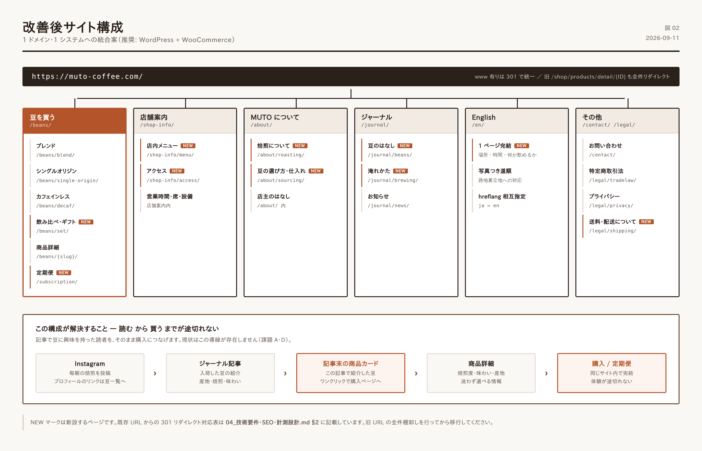
muto-coffee.com/
│
├── / トップ
│
├── /beans/ 豆を買う（一覧・絞り込み）
│ ├── /beans/blend/ ブレンド
│ ├── /beans/single-origin/ シングルオリジン
│ ├── /beans/decaf/ カフェインレス
│ ├── /beans/set/ 飲み比べセット・ギフト
│ └── /beans/{商品スラッグ}/ 商品詳細
│
├── /subscription/ 定期便（フェーズ3）
│
├── /shop-info/ 店舗案内（メニュー・アクセス・店内）
│ ├── /shop-info/menu/ 店内メニュー
│ └── /shop-info/access/ アクセス（写真つき道順）
│
├── /about/ MUTO について（店主・焙煎・豆の選定）
│ ├── /about/roasting/ 焙煎について（GIESEN）
│ └── /about/sourcing/ 豆の選び方・仕入れ
│
├── /journal/ ジャーナル（旧 News の発展形）
│ ├── /journal/beans/ 入荷した豆の紹介
│ ├── /journal/brewing/ 淹れ方・道具
│ └── /journal/news/ お知らせ
│
├── /en/ English（1ページ）
│
├── /contact/ お問い合わせ
│
└── /legal/ 特商法・プライバシーポリシー
├── /legal/tradelaw/
├── /legal/privacy/
└── /legal/shipping/ 送料・配送について
PC（7項目以内・横並び）
[ロゴ] 豆を買う 店舗案内 MUTOについて ジャーナル EN [🛒 カート]
スマートフォン（ハンバーガー＋固定フッターCTA）
上部: [☰] [ロゴ] [🛒]
下部固定: [ 豆を見る ] [ アクセス ] [ 電話 ]
スマホ下部の固定 CTA は、カフェ・ロースタリー業態で効果が高い定番施策です。「電話」「地図」「買う」の 3 つを常に指の届く位置に置きます。
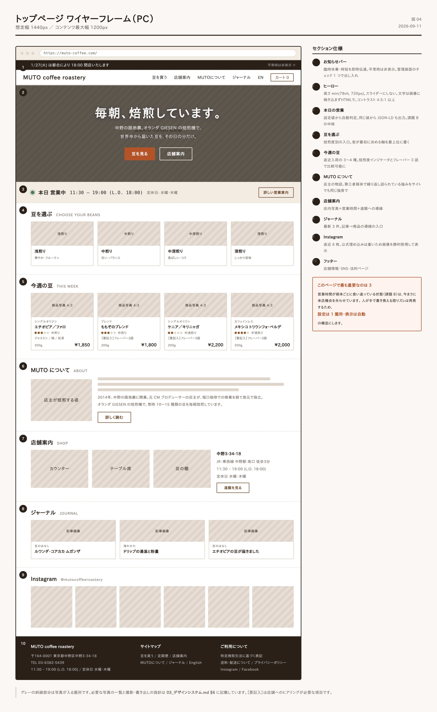
| # | セクション | 目的 | 内容 |
|---|---|---|---|
| 1 | お知らせバー | 臨時情報の即時伝達 | 臨時休業・時短・年末年始。平常時は非表示。管理画面のチェック 1 つで出し入れ |
| 2 | ヒーロー | 店の本質を 3 秒で | 焙煎中の GIESEN の写真＋「毎朝、焙煎しています。」＋副文 |
| 3 | 本日の営業 | 課題 B への直接回答 | 「本日 11:30〜19:00 営業中」／「本日は定休日です」を自動判定で表示 |
| 4 | 豆を選ぶ | EC への主導線 | 焙煎度別の入口 3〜4 枚＋「すべての豆を見る」 |
| 5 | 今週の豆 | 鮮度感と再訪理由 | 直近入荷した 3〜4 種をカードで。各カードから商品詳細へ |
| 6 | MUTO について | 信頼と差別化 | 店主の写真＋ストーリー抜粋＋「詳しく読む」 |
| 7 | 店舗案内 | 来店導線 | 店内写真＋営業時間＋地図＋「道順を見る」 |
| 8 | ジャーナル | 回遊と資産活用 | 最新記事 3 件 |
| 9 | SNS 相互送客 | 直近投稿 6 枚のグリッド＋フォローボタン | |
| 10 | フッター | 情報の網羅 | 店舗情報・営業時間・SNS・法的ページ・サイトマップ |
┌──────────────────────────────────────────────────┐
│ [全幅・焙煎中の GIESEN 焙煎機の写真] │
│ ※ 湯気・豆の質感・手元が写っているものを推奨 │
│ │
│ 毎朝、焙煎しています。 │
│ │
│ 中野の路地裏。オランダ GIESEN の焙煎機で、 │
│ 世界中から届いた豆を、その日の分だけ。 │
│ │
│ [ 豆を見る ] [ 店舗案内 ] │
└──────────────────────────────────────────────────┘
要件
100svh ではなく min(78vh, 720px)。スクロールできることが一目で分かる高さに留めます。┌──────────────────────────────────────────────┐
│ ● 本日 営業中 11:30 – 19:00 (L.O. 18:00) │
│ 定休日: 水曜・木曜 │
│ [ 詳しい営業案内 ] │
└──────────────────────────────────────────────┘
実装要件
openingHoursSpecification を出力する（→ 04_技術要件 §3）。この 1 ブロックが、課題 B（情報の不一致）を構造的に解決します。 人が手で書き換える限り、ズレは必ず再発します。設定は 1 箇所、表示は自動 にすることが要点です。
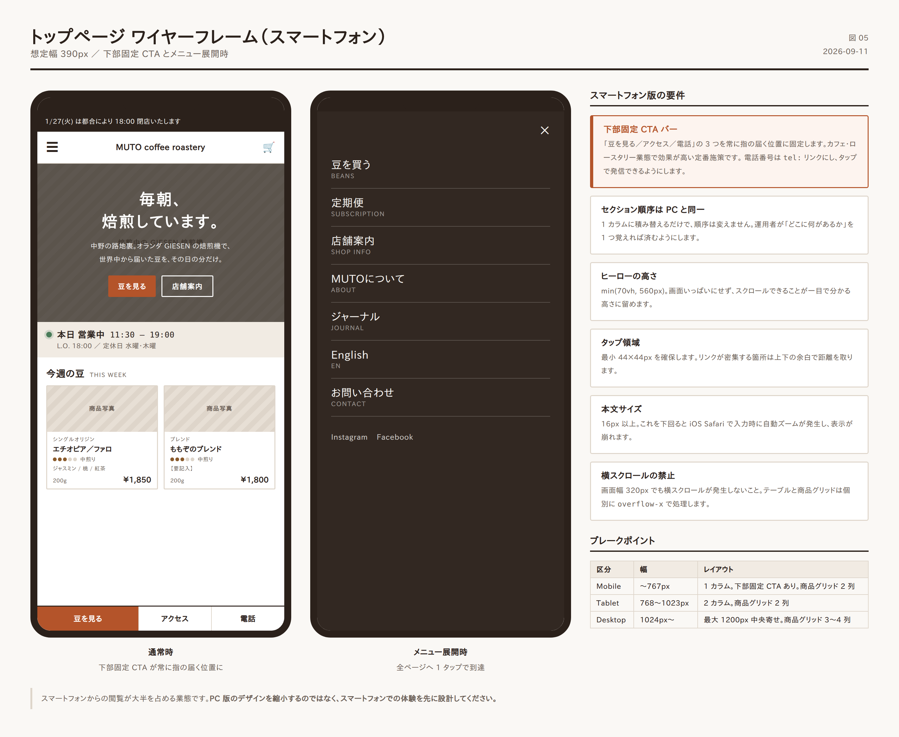
min(70vh, 560px)。tel: リンク。タップで発信。/beans/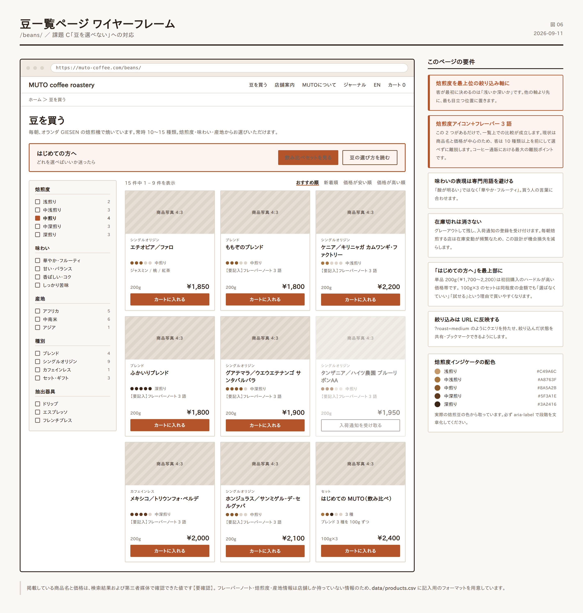
絞り込み軸
| 軸 | 選択肢 | 理由 |
|---|---|---|
| 焙煎度 | 浅煎り / 中煎り / 中深煎り / 深煎り | 客が最初に決める軸。最上位に置く |
| 味わい | 華やか・フルーティ / 甘い・バランス / 香ばしい・コク / しっかり苦味 | 専門用語を避けた表現にする |
| 産地 | アフリカ / 中南米 / アジア | |
| 種別 | ブレンド / シングルオリジン / カフェインレス / セット | |
| 抽出器具 | ドリップ / エスプレッソ / フレンチプレス | 「自分の道具で使えるか」に答える |
並べ替え — おすすめ順（既定）／新着順／価格の安い順・高い順
商品カードに載せる情報
┌────────────────────┐
│ [ 豆の写真 ] │
│ シングルオリジン │ ← 種別タグ
│ エチオピア／ファロ │ ← 商品名
│ ●●●○○ 中煎り │ ← 焙煎度インジケータ
│ ジャスミン / 桃 / 紅茶 │ ← フレーバーノート3語
│ 200g ¥1,850 │
│ [ カートに入れる ] │
└────────────────────┘
焙煎度をアイコンで、味を 3 語で。 この 2 つがあるだけで、一覧上での比較が成立します。 現状は商品名と価格が中心のため、客は 10 種類以上を前にして選べずに離脱します。
在庫切れの扱い — カードを消さず、グレーアウトして「入荷待ち」と表示し、入荷通知メールの登録を受け付けます。毎朝焙煎する店では在庫の変動が頻繁なため、この設計が機会損失を減らします。
/beans/{スラッグ}/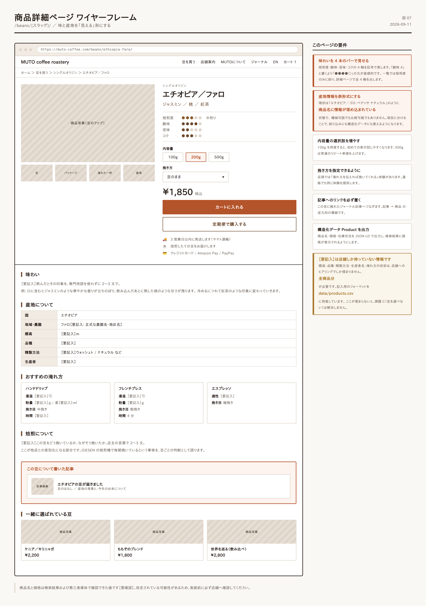
上部（ファーストビュー）
┌─────────────────┬──────────────────────────┐
│ │ シングルオリジン │
│ │ エチオピア／ファロ │
│ [ 商品写真 ] │ │
│ │ ジャスミン / 桃 / 紅茶 │
│ ○ ○ ○ │ │
│ （サムネイル） │ 焙煎度 ●●●○○ 中煎り │
│ │ 酸味 ●●●●○ │
│ │ 苦味 ●●○○○ │
│ │ コク ●●●○○ │
│ │ │
│ │ 内容量 [100g] [200g] [500g]│
│ │ 挽き方 [豆のまま ▾] │
│ │ │
│ │ ¥1,850 (税込) │
│ │ [ カートに入れる ] │
│ │ [ 定期便で購入 ] │
│ │ │
│ │ 🚚 3営業日以内に発送 │
│ │ ☕ 焙煎後すぐにお届けします │
└─────────────────┴──────────────────────────┘
下部（詳細情報）
| ブロック | 内容 |
|---|---|
| 味の説明 | 2〜3 文。専門用語を使わず、飲んだときの印象を書く |
| 産地情報 | 国／地域／農園・生産者／標高／品種／精製方法 を表形式で |
| おすすめの淹れ方 | 湯温・粉量・抽出時間の目安。器具別に |
| 焙煎について | この豆をどう焼いているか（店主の言葉） |
| 関連する記事 | この豆に触れたジャーナル記事へのリンク |
| 一緒に選ばれている豆 | 3 点 |
産地情報の表形式化が重要です。 現状は「エチオピア／ゴロ・ペデッサ ナチュラル」のように商品名に情報が埋め込まれている状態で、機械可読でも比較可能でもありません。項目に分けることで、絞り込みにも構造化データにも使えるようになります。
【要確認】 標高・品種・精製方法・生産者名は店舗側しか持っていない情報です。全商品分をヒアリングする必要があります。 入力フォーマットを data/products.csv に用意しました。
一覧ページの最上部に、迷う客のための入口を置きます。
┌───────────────────────────────────────────┐
│ はじめての方へ │
│ どれを選べばいいか迷ったら │
│ [ 飲み比べセットを見る ] [ 豆の選び方を読む ] │
└───────────────────────────────────────────┘
飲み比べセットの提案【新規商品】
| セット名 | 構成 | 想定価格 | 狙い |
|---|---|---|---|
| はじめての MUTO | ブレンド 3 種 × 100g | ¥2,400 前後 | 新規客の最初の 1 品 |
| 世界を巡る | シングルオリジン 3 種 × 100g | ¥2,800 前後 | コーヒー好き層 |
| 焙煎度で選ぶ | 浅・中・深 × 100g | ¥2,600 前後 | 好みが定まっていない層 |
単品 200g（¥1,700〜2,200）は初回購入のハードルとしては高い設定です。 100g × 3 種のセットは、同程度の金額でありながら「選ばなくていい」「試せる」という理由で買いやすくなります。新規顧客獲得の入口商品として機能します。
改善要件
| 項目 | 現状【確認済】 | 改善後 |
|---|---|---|
| 決済手段 | クレジットカードのみ | ＋ Amazon Pay / PayPay / コンビニ払い |
| ゲスト購入 | 【要確認】 | 会員登録なしで購入可能にする |
| 送料表示 | 【要確認】 | カート投入時点で送料と到着目安を明示 |
| 送料無料ライン | 【要確認】 | 設定し、カートで「あと ¥○○で送料無料」と表示 |
| 定期便 | なし | フェーズ 3 で導入 |
| 挽き方の指定 | 【要確認】 | 豆のまま／粗挽き／中挽き／細挽き を選択可能に |
「あと ¥○○で送料無料」の表示は、EC における客単価向上策として最も確実なものの 1 つです。 200g 単品を買おうとしていた客が、もう 1 種類を追加する理由になります。
/subscription/（フェーズ 3）毎月 / 隔月 で選べる
├ おまかせ便 店主が選んだ旬の豆を 200g ×1 月額 ¥1,900〜
├ ブレンド便 定番ブレンドから選択 200g ×1 月額 ¥1,800〜
└ たっぷり便 2 種類 200g ×2 月額 ¥3,400〜
設計上の要点
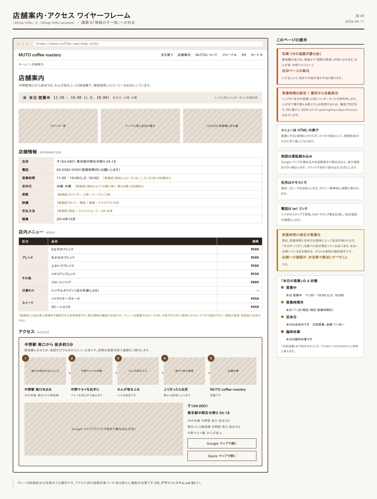
/shop-info/ — 店舗案内| ブロック | 内容 |
|---|---|
| 店内写真 | 3〜5 枚。カウンター、テーブル席、焙煎機、豆の棚 |
| 本日の営業 | トップと同じコンポーネントを再利用 |
| 営業時間の詳細 | 平常時／臨時／年末年始。表形式で |
| 席・設備 | 席数、Wi-Fi、電源、喫煙、支払方法、テイクアウト可否 → 【要確認】 |
| 店内メニュー | 下記 |
| アクセス | 下記 |
/shop-info/menu/【要確認】 以下は第三者媒体から確認できた情報であり、現行価格の確認が必須です。
| 区分 | 品目 | 参考価格 |
|---|---|---|
| ブレンド | ももぞのブレンド / なかなかブレンド / ふかいりブレンド | ¥580 前後 |
| ブレンド | イタリアンブレンド | ¥550 前後 |
| ブレンド | フローレンシア | ¥600 前後 |
| シングルオリジン | 日替わり（豆の在庫による） | — |
| スイーツ | ベイクドチーズケーキ / ガトーショコラ | ¥450 前後（ドリンクとセットで +¥400） |
| その他 | アイスコーヒー、カフェオレ、テイクアウト | — |
設計要件 — メニューは画像ではなく HTML の表で作ります。理由: 検索にかかる、スマホで読みやすい、価格改定時の更新が容易、英語版に流用できる。
/shop-info/access/路地裏立地であることを踏まえ、地図だけに頼らない設計にします。
中野駅 南口 を出る
↓ [写真: 南口の改札を出たところ]
中野マルイ を右手に見ながら進む
↓ [写真: マルイの外観]
れんが坂 を上る
↓ [写真: れんが坂の入口]
坂を上りきったら 左折
↓ [写真: 曲がり角]
MUTO coffee roastery 到着（徒歩 約3分）
↓ [写真: 店舗外観]
要件
現状の問題 — 記事の大半が臨時休業の告知で、翌日には価値を失います【確認済】。
新しい方針
| 情報の種類 | 現状 | 改善後 |
|---|---|---|
| 臨時休業・時短 | 記事として投稿 | お知らせバーで表示（記事にしない） |
| 年末年始の営業 | 記事として投稿 | 営業カレンダーに登録（自動で「本日の営業」に反映） |
| 豆の入荷・紹介 | 記事（一部あり） | 記事の中心に据える。商品ページへリンク |
| 淹れ方・道具 | なし | 新設。検索流入の主力に |
| 店の出来事 | なし | 適宜 |
| カテゴリ | URL | 内容 | 更新目安 |
|---|---|---|---|
| 豆のはなし | /journal/beans/ |
新しく入荷した豆の紹介、産地の背景、味の説明 | 月 2〜4 本 |
| 淹れかた | /journal/brewing/ |
ドリップの手順、湯温、道具の選び方、保存方法 | 月 1 本 |
| お知らせ | /journal/news/ |
セール、イベント、営業に関する重要な案内 | 随時 |
これが課題 A と D を同時に解決する仕組みです。
豆の紹介記事の末尾に、必ずその商品へのカードを挿入します。
┌──────────────────────────────────────┐
│ この記事で紹介した豆 │
│ ┌────┐ │
│ │写真 │ エチオピア／ファロ │
│ └────┘ ジャスミン / 桃 / 紅茶 │
│ 200g ¥1,850 │
│ [ 購入ページへ ] │
└──────────────────────────────────────┘
WordPress + WooCommerce に統合すれば、記事編集画面から商品を選ぶだけでこのブロックが挿入されるようにできます。手作業でリンクを貼る必要はありません。
豆の紹介記事は、次の型に沿って書けば毎回 20〜30 分で完成します。
# {豆の名前} が入荷しました
## この豆について
（産地・農園・標高・品種・精製方法を 3〜4 文で）
## 焙煎について
（どう焼いたか、なぜそう焼いたか。店主の言葉で 2〜3 文）
## 味わい
（飲んだときの印象を専門用語なしで 2〜3 文）
{フレーバーノート 3 語}
## おすすめの淹れ方
（湯温・粉量・時間の目安）
[商品カード]
/en/ — 課題 F への対応全訳はしません。1 ページに要点だけを載せます。
訪日客が知りたいのは次の 6 点です。
MUTO coffee roastery
A small roastery in a quiet Nakano back street. Since 2014.
━━ WHERE ━━
3-34-18 Nakano, Nakano-ku, Tokyo
3 min walk from Nakano Station (South Exit)
Behind Marui, up the brick slope, then left.
[ Open in Google Maps ]
[写真つきの道順 5 ステップ]
━━ HOURS ━━
11:30 – 19:00 (Last order 18:00)
Closed: Wednesday & Thursday
━━ WHAT WE DO ━━
We roast specialty coffee every morning on a Dutch GIESEN roaster.
10–15 origins and blends, always.
Hand-dripped coffee, homemade cakes, and beans to take home.
━━ MENU ━━
[主要メニューの英語表記＋価格]
━━ BEANS ━━
Sold by weight. 100g / 200g.
We can grind for you — just tell us your brewing method.
━━ PAYMENT ━━
Cash / Credit cards ※【要確認】
Note: Our online shop ships within Japan only.
[ Instagram ] [ 日本語サイト ]
実装上の注意
<html lang="en"> を正しく設定。hreflang を相互に設定する。/contact/| 項目 | 仕様 |
|---|---|
| フォーム項目 | お名前／メールアドレス／種別（商品・来店・卸・取材・その他）／本文 |
| 迷惑メール対策 | reCAPTCHA v3 もしくは honeypot |
| 自動返信 | あり。営業日での返信目安を明記 |
| 電話 | tel: リンクで併記。営業時間内である旨を注記 |
| 卸・取材の窓口 | 種別で分岐。取材依頼は集客資産になるため、受け口を明確にする |
| ブレークポイント | 幅 | レイアウト |
|---|---|---|
| Mobile | 〜767px | 1 カラム。下部固定 CTA あり |
| Tablet | 768〜1023px | 2 カラム（商品グリッドは 2 列） |
| Desktop | 1024px〜 | 最大コンテンツ幅 1200px、中央寄せ。商品グリッドは 3〜4 列 |
共通要件
max-width: 100%。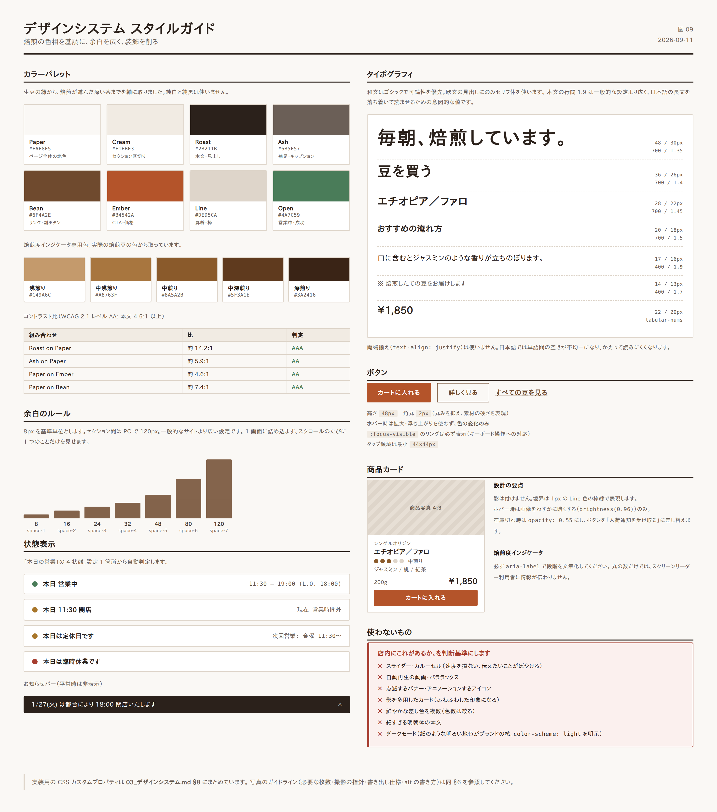
実店舗の質感 —— 路地裏、木、革、焙煎機の鉄、湯気 —— をそのまま Web に持ち込みます。
| 守ること | 避けること |
|---|---|
| 余白を広く取る | 情報を詰め込む |
| 写真を大きく使う | 装飾的なイラスト・アイコンの多用 |
| 色数を絞る | 鮮やかな差し色を複数使う |
| 静止した画面 | スライダー・自動再生・パララックス |
| 読みやすい本文 | 細すぎる明朝体・小さすぎる文字 |
判断に迷ったら「店内にこれがあるか」を基準にします。 店内に点滅するバナーはありません。
焙煎の色相をそのまま基調にします。生豆の緑から、焙煎が進んだ深い茶までを軸に取りました。
| 用途 | 名称 | HEX | 使いどころ |
|---|---|---|---|
| 背景（基調） | Paper | #FAF8F5 |
ページ全体の地色。純白を避け、紙の質感に寄せる |
| 背景（副） | Cream | #F1EBE3 |
セクションの区切り、カード背景 |
| 文字（主） | Roast | #2B211B |
本文・見出し。純黒を避ける |
| 文字（副） | Ash | #6B5F57 |
補足文、キャプション |
| 主要色 | Bean | #6F4A2E |
リンク、見出しの装飾、ボタン |
| 強調色 | Ember | #B4542A |
CTA ボタン、価格、重要な状態表示 |
| 罫線 | Line | #DED5CA |
区切り線、入力欄の枠 |
| 用途 | HEX | 使いどころ |
|---|---|---|
| 営業中 / 成功 | #4A7C59 |
「本日 営業中」の点、購入完了 |
| 休業 / 注意 | #A8762B |
「本日は定休日」、在庫僅少 |
| エラー | #A63D2F |
入力エラー、在庫なし |
商品カード・詳細ページで使う焙煎度の 5 段階表示です。
| 段階 | 表示 | HEX |
|---|---|---|
| 浅煎り | ●○○○○ | #C49A6C |
| 中浅煎り | ●●○○○ | #A8763F |
| 中煎り | ●●●○○ | #8A5A2B |
| 中深煎り | ●●●●○ | #5F3A1E |
| 深煎り | ●●●●● | #3A2416 |
この 5 色は、実際の焙煎豆の色から取っています。 情報として機能すると同時に、店の専門性を視覚的に伝えます。
WCAG 2.1 レベル AA（本文 4.5:1、大きい文字 3:1）を満たすことを確認済みです。
| 組み合わせ | 比 | 判定 |
|---|---|---|
Roast #2B211B on Paper #FAF8F5 |
約 14.2:1 | AAA |
Ash #6B5F57 on Paper #FAF8F5 |
約 5.9:1 | AA |
Paper #FAF8F5 on Ember #B4542A |
約 4.6:1 | AA |
Paper #FAF8F5 on Bean #6F4A2E |
約 7.4:1 | AAA |
ヒーロー画像の上に文字を載せる場合は、rgba(30, 22, 16, 0.45) 程度のオーバーレイを重ね、必ず 4.5:1 以上を確保してください。
/* 和文・欧文 共通の本文 */
--font-body:
"Noto Sans JP",
"Hiragino Kaku Gothic ProN", "Hiragino Sans",
"Yu Gothic", "Meiryo", sans-serif;
/* 見出し・ロゴまわりの欧文 */
--font-display:
"Cormorant Garamond", "Times New Roman",
"Hiragino Mincho ProN", "Yu Mincho", serif;
/* 価格・数値 */
--font-numeric:
"Noto Sans JP", -apple-system, sans-serif;
font-variant-numeric: tabular-nums;
方針 — 和文はゴシックで可読性を優先。欧文の見出し（店名、セクションタイトルの英字）にのみセリフ体を使い、落ち着いた印象を作ります。
読み込み要件
font-display: swap を指定し、フォント読み込み中も文字が見える状態にする。| 用途 | PC | SP | 行間 | 太さ |
|---|---|---|---|---|
| ヒーロー見出し | 48px | 30px | 1.35 | 700 |
| ページ見出し (h1) | 36px | 26px | 1.4 | 700 |
| セクション見出し (h2) | 28px | 22px | 1.45 | 700 |
| 小見出し (h3) | 20px | 18px | 1.5 | 700 |
| 本文 | 17px | 16px | 1.9 | 400 |
| 補足・キャプション | 14px | 13px | 1.7 | 400 |
| 価格 | 22px | 20px | 1.3 | 700 |
本文の行間 1.9 は、一般的な設定（1.6〜1.7）より広めです。 日本語の長文を落ち着いて読ませるための意図的な設定で、店の「静けさ」というコンセプトにも対応します。
body {
font-feature-settings: "palt" 1; /* 和文の詰め */
letter-spacing: 0.03em;
text-align: left; /* 両端揃えにしない */
}
h1, h2, h3 { letter-spacing: 0.06em; }
p { line-break: strict; overflow-wrap: break-word; }
text-align: justify（両端揃え）は使いません。日本語では単語間の空きが不均一になり、かえって読みにくくなります。
8px を基準単位とします。
| トークン | 値 | 用途 |
|---|---|---|
space-1 |
8px | アイコンと文字の間 |
space-2 |
16px | 要素内の余白 |
space-3 |
24px | カード内の padding |
space-4 |
32px | 要素間 |
space-5 |
48px | 小セクション間 |
space-6 |
80px | セクション間（SP） |
space-7 |
120px | セクション間（PC） |
セクション間を PC で 120px 取ります。 一般的なサイトより広い設定です。1 画面に詰め込まず、スクロールのたびに 1 つのことだけを見せることで、落ち着いた印象を作ります。
コンテンツ幅
--width-content: 1200px; /* 通常 */
--width-narrow: 720px; /* 記事本文（1行あたり 40〜45 文字に収まる） */
--gutter: 20px; /* 画面端の余白（SP） */
| 種別 | 用途 | 背景 | 文字 | 枠線 |
|---|---|---|---|---|
| Primary | カートに入れる、購入 | #B4542A |
#FAF8F5 |
なし |
| Secondary | 詳しく見る、豆を見る | 透明 | #6F4A2E |
1px #6F4A2E |
| Text | 補助的なリンク | 透明 | #6F4A2E |
下線 |
.btn {
min-height: 48px;
padding: 14px 32px;
border-radius: 2px; /* ほぼ角丸なし。硬質な印象 */
font-size: 16px;
font-weight: 700;
letter-spacing: 0.08em;
transition: background-color .2s ease, color .2s ease;
}
.btn:focus-visible {
outline: 2px solid #6F4A2E;
outline-offset: 3px;
}
┌──────────────────────┐
│ │
│ [ 画像 4:3 ] │ ← object-fit: cover
│ │
├──────────────────────┤
│ シングルオリジン │ ← 12px / Ash / 字間広め
│ エチオピア／ファロ │ ← 18px / Roast / 700
│ ●●●○○ 中煎り │ ← 焙煎度インジケータ
│ ジャスミン / 桃 / 紅茶 │ ← 13px / Ash
│ │
│ 200g ¥1,850 │ ← 価格 20px / 700
│ [ カートに入れる ] │
└──────────────────────┘
Line 色の枠線で表現。filter: brightness(0.96)）のみ。opacity: 0.55 にし、ボタンを「入荷通知を受け取る」に差し替える。<span class="roast-level" aria-label="焙煎度: 中煎り（5段階中3）">
<i class="on"></i><i class="on"></i><i class="on"></i><i></i><i></i>
<span class="roast-label">中煎り</span>
</span>
必ず aria-label で段階を文章化してください。 丸の数だけでは、スクリーンリーダー利用者に情報が伝わりません。
酸味 ●●●●○
苦味 ●●○○○
コク ●●●○○
┌────────────────────────────────────────────────┐
│ 1/27(火) は都合により 18:00 閉店いたします [×] │
└────────────────────────────────────────────────┘
#2B211B、文字 #FAF8F5。localStorage）。| 状態 | 表示 | 点の色 |
|---|---|---|
| 営業中 | 本日 営業中 11:30 – 19:00 (L.O. 18:00) | #4A7C59 |
| 営業時間外 | 本日 11:30 開店 （現在 営業時間外） | #A8762B |
| 定休日 | 本日は定休日です 次回営業: 金曜 11:30〜 | #A8762B |
| 臨時休業 | 本日は臨時休業です | #A63D2F |
「次回営業」まで表示することで、「じゃあいつ行けるのか」に同時に答えます。
サイトの印象の大半は写真で決まります。以下を満たす素材を用意してください。
| 用途 | 枚数 | 内容 |
|---|---|---|
| ヒーロー | 1〜2 | 焙煎中の GIESEN。湯気・豆・手元が写るもの |
| 店内 | 5〜8 | カウンター、席、豆の棚、ドリップの手元、外観 |
| アクセス | 5〜6 | 駅からの道順の各ポイント |
| 商品 | 全商品 × 2〜3 | 豆のアップ、パッケージ、淹れた一杯 |
| 店主 | 1〜2 | 焙煎中／ドリップ中の姿 |
| メニュー | 3〜5 | コーヒー、チーズケーキ、ガトーショコラ |
| 守ること | 理由 |
|---|---|
| 自然光で撮る | 店の雰囲気が最も正確に写ります |
| 白飛びさせない | 焙煎豆の質感が失われます |
| 彩度を上げすぎない | 落ち着いた色調がブランドの印象です |
| 背景を整理する | 余計なものが写ると生活感が出ます |
| 商品は同じ条件で撮る | 一覧に並べたとき、比較可能になります |
| 用途 | 長辺 | 形式 | 目標容量 |
|---|---|---|---|
| ヒーロー | 2000px | WebP（JPEG フォールバック） | 250KB 以下 |
| セクション画像 | 1400px | WebP | 150KB 以下 |
| 商品画像 | 1000px | WebP | 100KB 以下 |
| サムネイル | 600px | WebP | 50KB 以下 |
すべての画像に width / height 属性を指定してください。 レイアウトのガタつき（CLS）を防ぐために必須です。
| 悪い例 | 良い例 |
|---|---|
alt="画像" |
alt="GIESEN の焙煎機で豆を焼いている様子" |
alt="コーヒー" |
alt="ハンドドリップで淹れるももぞのブレンド" |
alt="IMG_2841" |
alt="中野店のカウンター席と豆の棚" |
装飾目的の画像は alt="" とし、スクリーンリーダーに読ませません。
WCAG 2.1 レベル AA を目標とします。
| 項目 | 要件 |
|---|---|
| コントラスト | 本文 4.5:1 以上、大きい文字 3:1 以上 |
| キーボード操作 | 全機能がキーボードのみで操作可能。フォーカスリングを消さない |
| 見出し構造 | h1 → h2 → h3 の順序を守る。階層を飛ばさない |
| 画像 | すべてに適切な alt |
| フォーム | すべての入力欄に <label> を紐付ける |
| リンク文言 | 「こちら」「詳細」ではなく、行き先が分かる文言にする |
| 動きの抑制 | prefers-reduced-motion に対応し、該当時はアニメーションを無効化 |
| 言語指定 | <html lang="ja">（英語ページは en） |
| 拡大 | 200% 拡大時もレイアウトが崩れない |
:root {
/* Color */
--c-paper: #FAF8F5;
--c-cream: #F1EBE3;
--c-roast: #2B211B;
--c-ash: #6B5F57;
--c-bean: #6F4A2E;
--c-ember: #B4542A;
--c-line: #DED5CA;
--c-open: #4A7C59;
--c-closed: #A8762B;
--c-error: #A63D2F;
/* Roast levels */
--roast-1: #C49A6C;
--roast-2: #A8763F;
--roast-3: #8A5A2B;
--roast-4: #5F3A1E;
--roast-5: #3A2416;
/* Typography */
--font-body: "Noto Sans JP", "Hiragino Kaku Gothic ProN", "Yu Gothic", sans-serif;
--font-display: "Cormorant Garamond", "Yu Mincho", serif;
--fs-body: 17px;
--lh-body: 1.9;
/* Space */
--space-1: 8px; --space-2: 16px; --space-3: 24px;
--space-4: 32px; --space-5: 48px; --space-6: 80px; --space-7: 120px;
/* Layout */
--width-content: 1200px;
--width-narrow: 720px;
--gutter: 20px;
--radius: 2px;
}
@media (max-width: 767px) {
:root { --fs-body: 16px; --space-7: 80px; --gutter: 16px; }
}
@media (prefers-reduced-motion: reduce) {
*, *::before, *::after {
animation-duration: .01ms !important;
transition-duration: .01ms !important;
}
}
ダークモードは対応しません。 紙のような明るい地色がブランドの核であり、反転させると印象が損なわれます。
color-scheme: lightを明示し、ブラウザによる自動反転を防いでください。
02_サイト設計 §2 の 案 B（WordPress + WooCommerce への統合） を前提とします。
| 領域 | 採用 | 備考 |
|---|---|---|
| CMS | WordPress 6.x 以上 | 現行資産を活かせる【推定: 現行も WordPress】 |
| EC | WooCommerce | 商品点数 10〜20 点規模に適合 |
| テーマ | オリジナル（ブロックテーマ）または軽量テーマの子テーマ | 多機能テーマは速度を損なうため避ける |
| 定期購入 | WooCommerce Subscriptions 等 | フェーズ 3 |
| 決済 | Stripe（カード）＋ Amazon Pay ＋ PayPay | |
| サーバー | PHP 8.2 以上、HTTP/2、常時 SSL | |
| CDN / キャッシュ | ページキャッシュ＋画像 CDN | |
| フォーム | Contact Form 7 または Snow Monkey Forms | |
| 予備 | WP 管理画面の 2 要素認証、自動バックアップ（日次） |
| 避けるもの | 理由 |
|---|---|
| ページビルダー（Elementor 等）の多用 | 出力 HTML が肥大化し、表示速度を大きく損なう |
| jQuery 依存のプラグイン | 不要な読み込みが増える |
| 自動翻訳ウィジェット | 品質が店の印象を損なう |
| スライダー・カルーセル | 設計方針（静けさ）に反し、速度も落ちる |
| フォントアイコン（Font Awesome 全体読み込み） | 必要な数個は SVG を直接埋め込む |
これを怠ると、検索流入と外部リンクを失います。 移行作業で最も重要な工程です。
# www あり → なし（301）
RewriteCond %{HTTP_HOST} ^www\.muto-coffee\.com$ [NC]
RewriteRule ^(.*)$ https://muto-coffee.com/$1 [R=301,L]
確認できた商品 ID から、最低限この対応表が必要です【要確認: 全 ID を棚卸しすること】。
| 旧 URL | 新 URL |
|---|---|
/shop/products/detail/8 |
/beans/fukairi-blend/ |
/shop/products/detail/10 |
/beans/momozono-blend/ |
/shop/products/detail/11 |
/beans/decaf-mexico-triunfo-verde/ |
/shop/products/detail/12 |
/beans/kenya-kirinyaga-kamwangi/ |
/shop/products/detail/15 |
/beans/italian-blend/ |
/shop/products/detail/17 |
/beans/honduras-chaguite-ih90/ |
/shop/products/detail/20 |
/beans/tanzania-heights-blue-ribbon-aa/ |
/shop/products/detail/34 |
/beans/ethiopia-faro/ |
/shop/products/detail/37 |
/beans/ethiopia-goro-bedessa-natural/ |
/shop/products/detail/41 |
/beans/honduras-san-miguel-de-cerguapa/ |
/shop/products/detail/55 |
/beans/guatemala-huehuetenango-santa-barbara/ |
/shop/ |
/beans/ |
/shop/help/about |
/about-shop/ |
/shop/help/tradelaw |
/legal/tradelaw/ |
現在の News 記事は日本語がそのままスラッグになっています【確認済】。
現状: https://muto-coffee.com/ルワンダ・コアカカ-ムガンザ/
→ 実際には %E3%83%AB%E3%83%AF... と長大にエンコードされる
問題点 — SNS で共有したときに URL が壊れて見える、アクセス解析でページが判別しにくい、外部ツールとの連携で不具合が出やすい。
対応 — 新規記事は英数字スラッグにします。既存記事は変更せず 301 でつなぐか、そのまま残します。
新: /journal/beans/rwanda-koakaka-muganza/
旧: /ルワンダ・コアカカ-ムガンザ/ → 301 → 新
既存記事のスラッグを 301 なしで変更してはいけません。 検索順位と被リンクを失います。
tools/capture_site.py または Screaming Frog 等）全ページに出力します。「本日の営業」ブロックと同じ設定値から生成してください。
{
"@context": "https://schema.org",
"@type": "CafeOrCoffeeShop",
"@id": "https://muto-coffee.com/#shop",
"name": "MUTO coffee roastery",
"alternateName": "ムトウ コーヒー ロースタリー",
"url": "https://muto-coffee.com/",
"telephone": "+81-3-6382-5439",
"image": "https://muto-coffee.com/images/shop-exterior.jpg",
"priceRange": "¥¥",
"servesCuisine": "Coffee",
"address": {
"@type": "PostalAddress",
"streetAddress": "中野3-34-18",
"addressLocality": "中野区",
"addressRegion": "東京都",
"postalCode": "164-0001",
"addressCountry": "JP"
},
"geo": {
"@type": "GeoCoordinates",
"latitude": "【要確認: 実測値を入れる】",
"longitude": "【要確認: 実測値を入れる】"
},
"openingHoursSpecification": [
{
"@type": "OpeningHoursSpecification",
"dayOfWeek": ["Monday","Tuesday","Friday","Saturday","Sunday"],
"opens": "11:30",
"closes": "19:00"
}
],
"sameAs": [
"https://www.instagram.com/mutocoffeeroastery/",
"https://www.facebook.com/mutocoffeeroastery/"
]
}
【要確認】 営業時間・定休日は媒体間で食い違っています（
01_現状分析課題 B）。店舗に確認して確定した値を入れてください。ここが正しくないと、Google 上の表示も誤り続けます。 臨時休業日はspecialOpeningHoursSpecificationで個別に指定できます。
各商品詳細ページに出力します。
{
"@context": "https://schema.org",
"@type": "Product",
"name": "エチオピア／ファロ",
"image": ["https://muto-coffee.com/images/beans/ethiopia-faro.jpg"],
"description": "ジャスミンのような香りと、桃を思わせる甘さ。中煎り。",
"brand": { "@type": "Brand", "name": "MUTO coffee roastery" },
"offers": {
"@type": "Offer",
"url": "https://muto-coffee.com/beans/ethiopia-faro/",
"priceCurrency": "JPY",
"price": "1850",
"availability": "https://schema.org/InStock",
"seller": { "@type": "Organization", "name": "株式会社 Lounge M" }
}
}
ジャーナル記事には Article、パンくずには BreadcrumbList を出力します。
実装後、以下で必ず検証してください。
| ページ | title | description |
|---|---|---|
| トップ | MUTO coffee roastery｜中野の自家焙煎コーヒー豆店 | 中野駅から徒歩3分。オランダ GIESEN の焙煎機で毎朝焙煎するスペシャルティコーヒー専門店。常時10〜15種類の豆を販売、店内では淹れたての一杯と自家製ケーキを。 |
| 豆一覧 | コーヒー豆一覧｜MUTO coffee roastery | 焙煎度・味わい・産地から選べる自家焙煎コーヒー豆。ブレンドからシングルオリジン、カフェインレスまで常時10種類以上。全国発送。 |
| 商品詳細 | {商品名}｜コーヒー豆｜MUTO coffee roastery | {フレーバー3語}。{焙煎度}。{産地の特徴を1文}。200g ¥{価格}。中野の自家焙煎店から焙煎したての豆をお届けします。 |
| 店舗案内 | 店舗案内・アクセス｜MUTO coffee roastery | 中野駅南口から徒歩3分、れんが坂を上った路地裏。営業時間11:30〜19:00、定休日は水曜・木曜。駅からの道順を写真でご案内します。 |
| MUTOについて | MUTOについて｜中野の自家焙煎コーヒー店 | 2014年、中野の路地裏に開業。オランダ GIESEN の焙煎機で毎朝焙煎しています。店主の経歴と、豆を選ぶ基準について。 |
| ジャーナル | ジャーナル｜MUTO coffee roastery | 入荷した豆の紹介、焙煎の話、おいしい淹れ方。中野の自家焙煎コーヒー店からのお便りです。 |
ルール
詳細は data/keyword_plan.csv。主要なものは以下です。
| 優先 | キーワード | 意図 | 受け皿 |
|---|---|---|---|
| 最高 | 中野 コーヒー豆 | 地域 × 購買 | トップ / 豆一覧 |
| 最高 | 中野 自家焙煎 | 地域 × 専門性 | トップ / MUTOについて |
| 高 | 中野 カフェ 落ち着く | 地域 × 来店 | 店舗案内 |
| 高 | 中野 スペシャルティコーヒー | 地域 × 専門性 | 豆一覧 |
| 高 | コーヒー豆 通販 スペシャルティ | 全国 × 購買 | 豆一覧 |
| 中 | エチオピア コーヒー 豆 通販 | 産地指名 | 各商品詳細 |
| 中 | カフェインレス コーヒー豆 おいしい | ニーズ | カフェインレス商品 |
| 中 | コーヒー 焙煎度 違い | 情報収集 | ジャーナル（淹れかた） |
| 中 | ハンドドリップ 淹れ方 コツ | 情報収集 | ジャーナル（淹れかた） |
| 中 | コーヒー豆 保存方法 | 情報収集 | ジャーナル（淹れかた） |
| 低 | nakano coffee roastery | 訪日客 | /en/ |
「中野 ○○」で確実に 1 位を取ることが最優先です。 全国規模のキーワードで大手と競うより、地域で圧倒的な存在になる方が、来店と通販の両方に効きます。
トップ ──→ 豆一覧 ──→ 商品詳細
│ ↑ │
│ └────────────┘（関連商品）
│
├──→ ジャーナル記事 ──→ 商品詳細 ★最重要
│ ↑ │
│ └─────────────────┘（関連記事）
│
├──→ 店舗案内 ──→ アクセス
└──→ MUTOについて ──→ 焙煎について ──→ 豆一覧
★ が付いた「記事 → 商品」の導線が、本改善の中核です。 記事で豆に興味を持った読者を、そのまま購入につなげます。現状はこの導線が存在しません（課題 A・D）。
| 項目 | 要件 |
|---|---|
| XML サイトマップ | 自動生成し Search Console に送信 |
| robots.txt | サイトマップの場所を明記。カート・マイページは noindex |
| canonical | 全ページに自己参照 canonical を出力 |
| パンくず | 全下層ページに設置＋構造化データ |
| 404 ページ | 独自ページを用意し、豆一覧とトップへの導線を置く |
| 画像 | ファイル名を英数字の意味のある名前に（IMG_2841.jpg → ethiopia-faro-beans.jpg） |
| Google ビジネスプロフィール | サイトと同一の営業時間・電話・住所を登録し、常に同期させる |
Google ビジネスプロフィールの整備は、地域検索において公式サイトと同等以上に重要です。 課題 B の情報不一致は、ここが未整備であることも一因と考えられます【推定】。
| 指標 | 目標 | 意味 |
|---|---|---|
| LCP | 2.5 秒以下 | 主要な要素が表示されるまで |
| INP | 200ms 以下 | 操作への反応 |
| CLS | 0.1 以下 | レイアウトのずれ |
| ページ総容量 | 1.5MB 以下（トップ） | |
| リクエスト数 | 50 以下（トップ） |
測定方法 — PageSpeed Insights のモバイル計測。実装完了時とリリース後 1 か月時点で測定し、記録します。
| 項目 | 要件 |
|---|---|
| 画像形式 | WebP を第一候補、JPEG をフォールバック |
| 画像の遅延読み込み | ファーストビュー外は loading="lazy" |
| ファーストビューの画像 | fetchpriority="high" を指定し、lazy にしない |
| 画像の寸法指定 | 全画像に width / height（CLS 対策） |
| フォント | サブセット化＋ font-display: swap ＋ preload |
| CSS | クリティカル CSS をインライン化、残りは遅延読み込み |
| JavaScript | defer 属性。不要なプラグインの JS を停止 |
| Google マップ | 遅延読み込み（クリックで初めて読み込む方式を推奨） |
| Instagram 埋め込み | 公式スクリプトは重いため、画像を静的に取得して表示する方式を推奨 |
| キャッシュ | ページキャッシュ有効化。静的ファイルは長期キャッシュ |
Instagram の公式埋め込みは 1 つで 500KB 前後を消費することがあります。 直近 6 枚の画像を定期取得して静的に表示する方式にすれば、見た目を保ったまま速度を維持できます。
| ツール | 目的 |
|---|---|
| Google Analytics 4 | 行動分析・コンバージョン計測 |
| Google Search Console | 検索流入の把握、インデックス監視 |
| Google タグマネージャー | タグの一元管理 |
| Google ビジネスプロフィール インサイト | 地域検索からの来店行動 |
| # | イベント名 | 内容 | 重要度 |
|---|---|---|---|
| 1 | purchase |
購入完了（金額・商品も送信） | 最高 |
| 2 | begin_checkout |
購入手続きの開始 | 高 |
| 3 | add_to_cart |
カート投入 | 高 |
| 4 | subscription_start |
定期便の申込（フェーズ3） | 最高 |
| 5 | tel_tap |
電話番号のタップ | 高（来店指標） |
| 6 | map_open |
地図アプリを開いた | 高（来店指標） |
| 7 | access_view |
アクセスページの閲覧 | 中（来店指標） |
| 8 | instagram_click |
Instagram への遷移 | 中 |
| 9 | contact_submit |
お問い合わせ送信 | 中 |
| 10 | restock_notify |
入荷通知の登録 | 中 |
5〜7 は「来店の意図」を測る指標です。 実店舗を持つ事業では、EC の売上だけを見ていると改善の効果を見誤ります。電話タップと地図を開いた回数は、来店に最も近い行動として必ず計測してください。
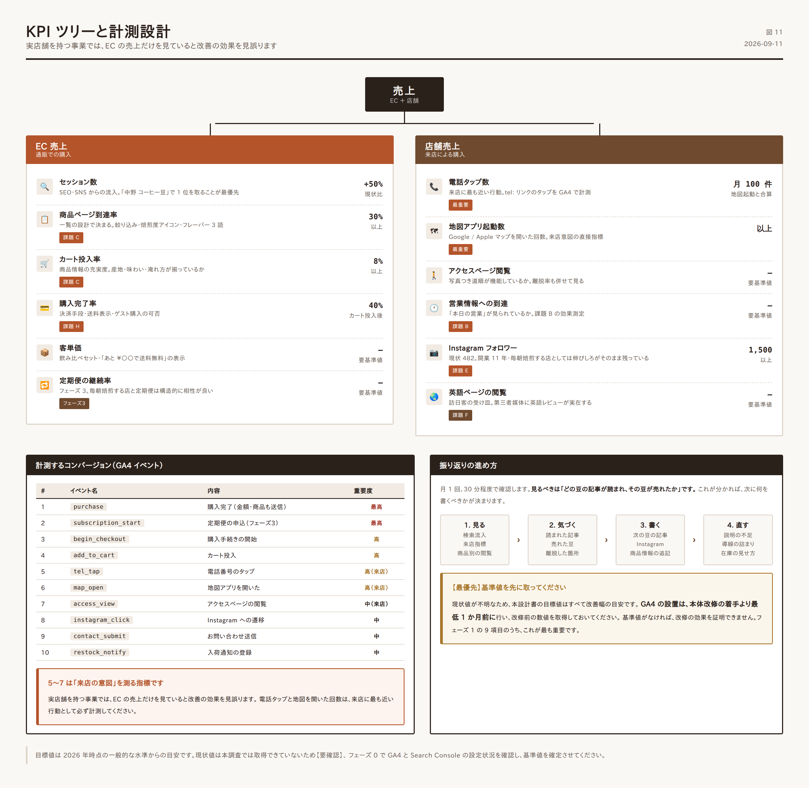
売上
├─ EC 売上
│ ├─ セッション数 ← SEO・SNS
│ ├─ 商品ページ到達率 ← 一覧の設計（課題 C）
│ ├─ カート投入率 ← 商品情報の充実度
│ ├─ 購入完了率 ← 決済手段・送料表示（課題 H）
│ └─ 客単価 ← セット商品・送料無料ライン
│
└─ 店舗売上
├─ 来店意図指標 ← 電話タップ・地図起動
├─ アクセスページ閲覧 ← 道順の分かりやすさ
└─ 営業情報の到達 ← 「本日の営業」表示（課題 B）
【要確認】 現状値が不明なため、以下は改善幅の目安です。実装前に GA4 で現状を計測し、確定させてください。
| 指標 | 目安 |
|---|---|
| 自然検索セッション | 現状比 +50% |
| 商品ページ到達率 | 30% 以上 |
| カート投入率 | 8% 以上 |
| 購入完了率（カート投入後） | 40% 以上 |
| 電話タップ + 地図起動 | 月 100 件以上 |
| Instagram フォロワー | 1,500 以上（現状 482） |
| 項目 | 要件 |
|---|---|
| 常時 SSL | HSTS を有効化 |
| 管理画面 | 2 要素認証、ログイン試行回数の制限、URL の変更 |
| 更新 | WordPress 本体・プラグインを月次で更新 |
| バックアップ | 日次自動。復元手順を文書化しておく |
| 決済 | カード情報を自社サーバーに保持しない（Stripe 等のトークン方式） |
| プライバシーポリシー | Cookie 利用・アクセス解析について明記 |
| 個人情報 | 注文データの保管期間と廃棄方針を定める |
【最優先の確認事項】 現行 EC-CUBE のバージョンを確認してください。2 系・3 系はサポートが終了しており、カード決済を扱うサイトとして重大なリスクがあります。この確認結果によっては、デザイン改善よりも移行を先行させる判断が必要です。
noindex が意図しないページに付いていない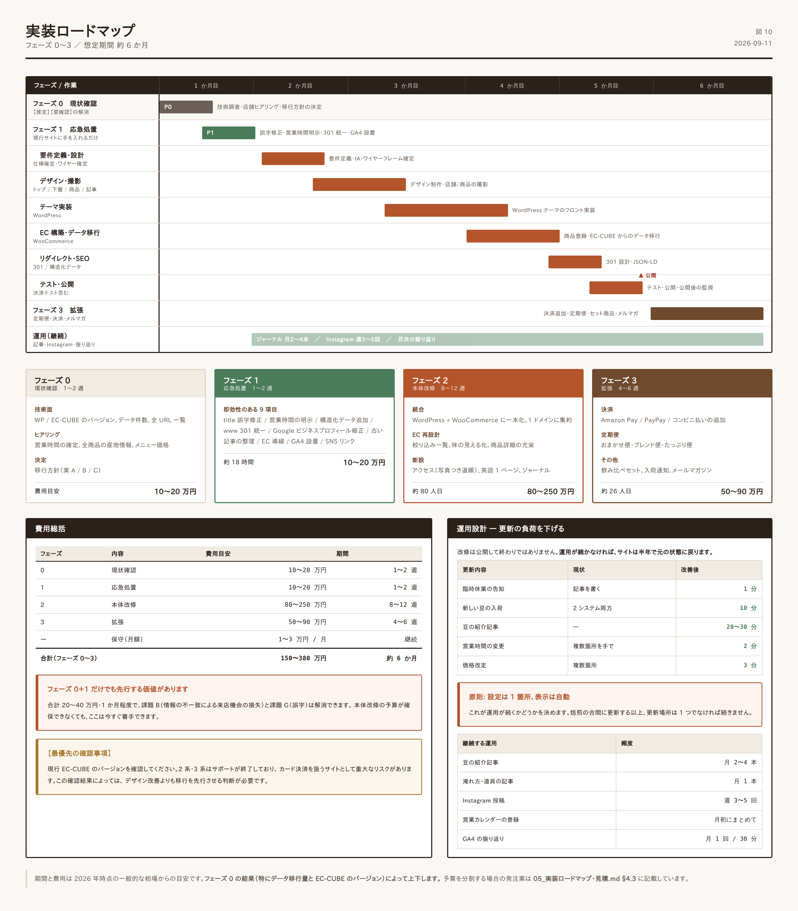
改修を 3 つのフェーズに分けます。フェーズ 1 は単独で先行して実施でき、即効性があります。
| フェーズ | 名称 | 期間目安 | 狙い |
|---|---|---|---|
| 0 | 現状確認 | 1〜2 週 | 【推定】【要確認】の解消。移行方針の確定 |
| 1 | 応急処置 | 1〜2 週 | 低コストで確実な損失を止める |
| 2 | 本体改修 | 8〜12 週 | サイト統合と EC 再設計 |
| 3 | 拡張 | 4〜6 週 | 定期便・決済拡充・多言語 |
設計を実装に移す前に、必ずここを通してください。 本設計書には【推定】【要確認】のラベルが付いた項目があり、それらが確定しないと工数も方針も定まりません。
| # | 確認事項 | 確認方法 | 判断への影響 |
|---|---|---|---|
| 1 | WordPress のバージョン・テーマ・プラグイン一覧 | 管理画面 | 移行工数 |
| 2 | EC-CUBE のメジャーバージョン | 管理画面またはソース | 最重要。2/3 系ならセキュリティ対応を最優先 |
| 3 | 商品データの件数と項目 | 管理画面 | 移行工数 |
| 4 | 顧客データ・注文履歴の件数 | 管理画面 | 移行工数・個人情報の扱い |
| 5 | サーバー環境（PHP バージョン、容量） | 契約情報 | 移行可否 |
| 6 | 全 URL の一覧 | tools/capture_site.py またはクロールツール |
リダイレクト設計 |
| 7 | 現状の GA4 / Search Console 設定 | 各管理画面 | 効果測定の基準値 |
| 8 | 画像素材の保有状況（元データの有無） | ヒアリング | 撮影の要否 |
| # | 項目 | なぜ必要か |
|---|---|---|
| 1 | 営業時間・定休日の正確な現行値 | 媒体間で食い違っている（課題 B）。すべての起点 |
| 2 | 年末年始・臨時休業の運用ルール | 営業カレンダーの設計 |
| 3 | 店内メニューの全品目と現行価格 | メニューページ |
| 4 | 全商品の産地情報（国／地区／農園／標高／品種／精製） | 商品詳細の設計（課題 C）。店舗しか持っていない情報 |
| 5 | 全商品のフレーバーノート（3 語）と焙煎度 | 一覧の絞り込み |
| 6 | 席数・Wi-Fi・電源・喫煙・支払方法 | 店舗案内 |
| 7 | 現在の月間受注数・客単価 | 効果測定の基準値 |
| 8 | 定期便への意向（対応可能な発送頻度・数量） | フェーズ 3 の設計 |
| 9 | 卸売の有無と受付方針 | お問い合わせの設計 |
| 10 | 撮影の可否と希望日 | 素材準備 |
項目 4・5 は全商品分が必要です。 入力用のフォーマットを
data/products.csvに用意しました。店舗に記入してもらってください。ここが埋まらないと、課題 C（豆を選べない）は解決できません。
現行サイトに手を入れるだけで実施できます。 本体改修を待たずに先行してください。
| # | 作業 | 対応する課題 | 工数目安 | 効果 |
|---|---|---|---|---|
| 1 | News ページの title を「roastary」→「roastery」に修正 | G | 0.5 時間 | 品質印象 |
| 2 | 営業時間・定休日をトップの目立つ位置に明記 | B | 2 時間 | 来店機会の回復 |
| 3 | 構造化データ（CafeOrCoffeeShop）を追加 |
B | 3 時間 | 検索結果での正確な表示 |
| 4 | www あり／なしの 301 統一 | A | 2 時間 | SEO 評価の集約 |
| 5 | Google ビジネスプロフィールの情報を修正・同期 | B | 2 時間 | 地域検索での正確な表示 |
| 6 | コロナ関連の古い記事を整理（非公開または注記） | D | 1 時間 | 情報の鮮度 |
| 7 | トップからショップへの導線を明確化 | A | 2 時間 | EC 流入 |
| 8 | GA4 とイベント計測を設置（基準値の取得開始） | — | 4 時間 | 以降の効果測定の前提 |
| 9 | Instagram へのリンクを全ページのフッターに追加 | E | 1 時間 | SNS 送客 |
合計: 約 18 時間（2〜3 人日）
#8 は最優先で実施してください。 改修前の数値がなければ、改修の効果を証明できません。フェーズ 2 の着手より 最低 1 か月前に設置し、基準値を取得しておくのが理想です。
| # | 作業 | 工数目安（人日） |
|---|---|---|
| 1 | 要件定義・仕様確定 | 5 |
| 2 | 情報設計・ワイヤーフレーム確定 | 4 |
| 3 | デザイン（トップ／下層／商品／記事） | 12 |
| 4 | 撮影（店舗・商品・道順） | 2 |
| 5 | WordPress テーマ実装 | 15 |
| 6 | WooCommerce 構築・商品登録 | 8 |
| 7 | 「本日の営業」自動判定機能の実装 | 3 |
| 8 | 豆一覧の絞り込み機能の実装 | 4 |
| 9 | EC-CUBE からのデータ移行 | 5 |
| 10 | リダイレクト設定・検証 | 3 |
| 11 | 構造化データ・SEO 設定 | 3 |
| 12 | 英語ページ作成 | 2 |
| 13 | 表示速度の最適化 | 3 |
| 14 | テスト（表示・決済・フォーム） | 5 |
| 15 | 公開作業・公開後の監視 | 3 |
| 16 | 運用マニュアル作成・引き継ぎ | 3 |
合計: 約 80 人日
| 発注先 | 目安 | 備考 |
|---|---|---|
| 制作会社（中規模） | 150〜250 万円 | 撮影・ディレクション込み |
| 制作会社（小規模）・フリーランス | 80〜150 万円 | 撮影は別途手配の場合あり |
| 段階発注（フェーズ 2 を分割） | 各 40〜80 万円 | 予算を分散できる |
金額は 2026 年時点の一般的な相場からの目安です。フェーズ 0 の結果（特にデータ移行量と EC-CUBE のバージョン）によって上下します。
予算を一度に確保できない場合、以下の順で分割できます。
2-a: コーポレート側の刷新（トップ・店舗案内・About・ジャーナル） 約 35 人日
→ ショップは現行のまま残し、デザインだけ寄せる
2-b: EC の再構築と統合（豆一覧・商品詳細・移行・リダイレクト） 約 35 人日
→ ここでサイトが 1 つになる
2-c: 仕上げ（英語ページ・速度最適化・計測） 約 10 人日
2-a を先に実施しても効果は出ますが、課題 A（分断）の解消は 2-b まで完了しません。
| # | 作業 | 対応する課題 | 工数目安 |
|---|---|---|---|
| 1 | 決済手段の追加（Amazon Pay / PayPay / コンビニ払い） | H | 4 人日 |
| 2 | 定期便の設計・実装 | H | 10 人日 |
| 3 | 飲み比べセット・ギフト商品の設計 | C | 3 人日 |
| 4 | 入荷通知メールの仕組み | C | 3 人日 |
| 5 | メールマガジン（新入荷の案内） | D・E | 4 人日 |
| 6 | Instagram 連携の強化 | E | 2 人日 |
合計: 約 26 人日 / 50〜90 万円
定期便が最も投資対効果が高い施策です。 一度獲得した顧客が継続的に購入する構造を作れるため、フェーズ 3 の中では優先度が最も高くなります。
改修は公開して終わりではありません。運用が続かなければ、サイトは半年で元の状態に戻ります。
| 更新内容 | 現状 | 改善後 | 所要時間 |
|---|---|---|---|
| 臨時休業の告知 | 記事を書く | 管理画面でチェックを入れる | 1 分 |
| 新しい豆の入荷 | WordPress と EC-CUBE の両方 | 商品を登録すると一覧に自動反映 | 10 分 |
| 豆の紹介記事 | — | テンプレートに沿って書く | 20〜30 分 |
| 営業時間の変更 | 複数箇所を手で修正 | 設定 1 箇所を変更 → 全箇所に反映 | 2 分 |
| 価格改定 | 複数箇所 | 商品データ 1 箇所 | 3 分 |
「設定は 1 箇所、表示は自動」 を全体の原則とします。これが運用が続くかどうかを決めます。
| 内容 | 頻度 | 担当 |
|---|---|---|
| 豆の紹介記事 | 月 2〜4 本 | 店主 |
| 淹れ方・道具の記事 | 月 1 本 | 店主または外注 |
| Instagram 投稿 | 週 3〜5 回 | 店主 |
| 商品の在庫更新 | 随時 | 店主 |
| 営業カレンダーの登録 | 月初にまとめて | 店主 |
| プラグイン更新・バックアップ確認 | 月 1 回 | 保守業者 |
| GA4 の確認・振り返り | 月 1 回 | 店主＋業者 |
現状はフォロワー 482・投稿 9 件【確認済】。この店の素材の豊かさを考えると、伸びしろがそのまま残っています。
毎日撮れるもの
| 曜日の目安 | 内容 | 撮影の手間 |
|---|---|---|
| 焙煎した日 | GIESEN で焼いている様子、焼き上がった豆 | 30 秒 |
| 入荷した日 | 生豆の袋、産地の情報 | 30 秒 |
| いつでも | ドリップの手元、湯気 | 30 秒 |
| いつでも | ケーキと一杯 | 30 秒 |
| 週 1 | 豆の紹介（記事へ誘導） | 3 分 |
運用のルール
月 1 回、以下を確認します。所要 30 分程度です。
見るべきは「どの豆の記事が読まれ、その豆が売れたか」です。 これが分かれば、次に何を書くべきかが決まります。
| フェーズ | 内容 | 費用目安 | 期間 |
|---|---|---|---|
| 0 | 現状確認 | 10〜20 万円 | 1〜2 週 |
| 1 | 応急処置 | 10〜20 万円 | 1〜2 週 |
| 2 | 本体改修 | 80〜250 万円 | 8〜12 週 |
| 3 | 拡張 | 50〜90 万円 | 4〜6 週 |
| — | 保守（月額） | 1〜3 万円／月 | 継続 |
フェーズ 0＋1 だけでも先行実施する価値があります。 合計 20〜40 万円・1 か月程度で、課題 B（情報の不一致による来店機会の損失）と課題 G（誤字）は解消できます。
実装着手前に、本設計書の【推定】【要確認】をすべて潰してください。
data/products.csv に記入）tools/capture_site.py をローカルで実行